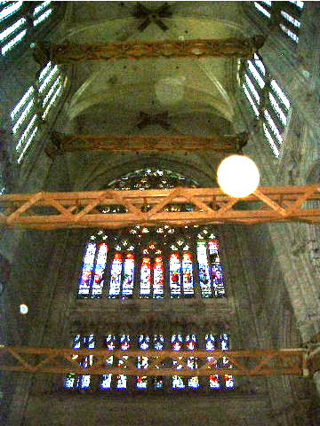

이 문서는 바로 당신을 위해 쓰여졌으며, 당신이 가지고 있을 불만도 당신을 설득하기 위해 사용할 것이다. 당신은 아마 풍부한 여가 시간에 수학의 가장 추상적인 분야 중 하나인 범주론을 배우는 것에 대해 반대할 수도 있다. 그러나 모든 반대 의견은 전혀 근거가 없다는 것을 알게 될 것이다.
내 낙관론은 몇가지 관찰에 근거한다.
첫번째, 범주는 마치 노다지와도 같은 프로그래밍 아이디어이다.
하스켈 프로그래머들은 오랫동안 이 자원들을 활용해 왔고, 그 아이디어가 다른 언어로 천천히 스며들고 있지만 그래도 이 과정은 너무 느리다. 속도를 높여야 한다.
두번째, 범주론은 프로그래머의 머리에 특히 잘맞는 수학이다.
그 이유는 범주론은 세부 사항을 다루기 보다는 합성를 다루기 때문이다. 범주론은 프로그램을 합성 가능하게 만드는 구조를 다룬다.
합성은 범주론의 근간을 이루는 것으로 범주 자체의 정의의 일부이다. 그리고 나는 합성이 프로그래밍의 본질이라고 강력하게 주장할 것이다. 우리는 위대한 엔지니어들이 서브루틴이라는 개념을 생각해 내기 훨씬 전부터 무언가를 합성해 왔다. 얼마 전 구조적 프로그래밍의 원리는 코드 블록을 합성가능하게 만들면서 프로그래밍에 혁명을 일으켰다. 그 후 객체를 구성하는 객체 지향 프로그래밍이 등장했다. 그리고 함수형 프로그래밍은 함수와 ADT를 구성하는 것 뿐만 아니라 다른 프로그래밍 패러다임에서는 사실상 불가능했던 동시성을 구성할 수 있게 해준다.
세번째, 나는 수학을 프로그래머에게 더 맛있게 조리할 것이다
전문 수학자일 때는 모든 가정을 매우 신중하게 설정하고, 모든 명제를 적절하게 한정하며, 모든 증명을 엄격하게 구성해야 한다. 이로 인해 수학 논문과 책들은 외부인이 읽기에 매우 어렵다.
그러나 물리학자로써 말하자면 물리학에서는 비공식적 추론을 사용하여 놀라운 발전을 이루었다. 예로들어 수학자들은 위대한 물리학자 디렉이 몇몇 미분방정식을 풀기 위해 현장에서 만들어낸 디랙 델타 함수를 비웃었다. 그러나 그들이 디렉의 통찰을 공식화한 완전히 새로운 미적분학의 분야인 분포 이론을 발견했을 때, 그들의 웃음은 멈추었다.
물론 이런 논증을 사용할 때는 수학적으로 명백히 잘못된 말을 할 위험이 있기 때문에, 이 책에서 비공식적 논증 뒤에는 견고한 수학 이론이 있도록 하려고 한다. 나는 Saunders Mac Lane의 'Category Theory for the Working Mathematician'의 낡은 복사본을 침대 옆에 두고 있다.
이 문서는 프로그래머를 위한 범주론이기 때문에, 모든 주요 개념을 컴퓨터 코드를 사용하여 설명할 것이다.
아마 독자들은 함수형 언어가 다른 인기 있는 명령형 언어보다 수학에 가깝다는 것을 알고 있을 것이다. 또한 그들은 더 많은 추상화 능력을 제공한다. 그런 면에서 범주론의 혜택을 받기 전에 먼저 Haskell을 배워야 한다는 유혹을 받을때도 있지만, 그런 것은 범주론이 함수형 프로그래밍 외부에는 적용될 수 없다는 것을 의미할 뿐이다. 이는 사실이 아니다.
경험 많은 프로그래머라면 자신에게 물어볼지도 모른다: '나는 범주론이나 함수형 방법에 대해 걱정하지 않고 이렇게 오랫동안 코딩해 왔는데, 무엇이 변한 걸까?'
명령형 언어를 침범하는 새로운 함수형 기능들의 꾸준한 흐름을 분명히 눈치채지 않을 수 없을 것이다. 심지어 객체 지향 프로그래밍의 요새인 자바조차 람다를 허용했다. C++는 최근 몇년마다 새로운 표준으로 빠르게 진화하고 있다. 이 모든 활동은 파괴적인 변화, 또는 우리 물리학자가 부르는 대로, 상전이를 위한 준비이다.
물을 계속 가열하면 끓기 시작한다. 우리는 이제 점점 뜨거워진 물에서 계속 수영해야 할지, 아니면 대안을 찾기 시작해야 할지 결정해야 하는 개구리의 위치에 있다.
이런 변화를 주도하는 요인 중 하나는 멀티코어 혁명이다. 현존하는 프로그래밍 패러다임인 객체 지향 프로그래밍은 동시성과 병렬 처리 분야에서 별다른 이점을 제공하지 않으며, 오히려 위험하고 버그를 유발하는 설계를 유도한다. 객체 지향의 핵심 원칙인 데이터 캡슐화는 공유와 변경이 결합될 때 데이터 레이스를 유발하는 요소가 된다. 또한 데이터를 보호하는 뮤텍스와의 결합은 좋은 아이디어이지만, 불행히도 락은 조합 가능하지 않고, 락 숨김은 데드락 발생 가능성을 높이고 디버깅을 더 어렵게 만든다.
그러나 동시성 없이도, 소프트웨어 시스템의 복잡도 증가는 명령형 패러다임의 확장성 한계를 시험하고 있다. 단순히 말해, 사이드 이펙트가 제어 불가능해지고 있다. 사이드 이펙트를 가진 함수는 종종 편리하고 작성하기 쉽다. 또한 사이드 이펙트는 원칙적으로 함수 이름과 주석에서 명시될 수 있다. SetPassword나 WriteFile 같은 함수는 분명 상태를 변경하고 사이드 이펙트를 생성하는데, 우리는 그것을 다루는 데 익숙하다. 문제는 사이드 이펙트를 가진 함수들을 다른 사이드 이펙트를 가진 함수들과 조합하기 시작할 때, 그리고 그 과정이 계속될 때 복잡해진다는 것이다. 사이드 이펙트가 본질적으로 나쁜 것은 아니지만, 그것들이 숨겨져 있다는 사실이 더 큰 규모에서 관리할 수 없게 만든다. 사이드 이펙트는 조절되지 않고, 명령형 프로그래밍은 모두 사이드 이펙트에 관한 것이다.

하드웨어 변화와 소프트웨어의 복잡도 증가는 우리로 하여금 프로그래밍의 기초를 재고하게 만든다. 유럽의 위대한 고딕 대성당 건축가들처럼, 우리는 재료와 구조의 한계까지 우리의 스킬을 연마해왔다. 프랑스 보베의 미완성 고딕 대성당은 이런 인간의 한계와의 싸움을 증언한다. 그것은 모든 이전 기록을 뛰어넘는 높이와 경량성을 목표로 했으나, 여러 차례의 붕괴를 겪었다. 철 강철과 목재 서포트와 같은 임시 조치는 그것이 붕괴되지 않도록 유지하지만, 분명 많은 것이 잘못되었다. 현대적 관점에서 보면, 현대 재료 과학, 컴퓨터 모델링, 유한 요소 분석, 일반 수학 및 물리학의 도움 없이 많은 고딕 구조물이 성공적으로 완성되었다는 것은 기적과도 같다.
복잡한 운영 체제, 웹 서버, 인터넷 인프라를 구축하면서 우리가 보여준 프로그래밍 기술을 미래 세대들도 높이 평가하기를 바란다. 그리고 솔직히 말해서, 그들이 그렇게 해야 한다. 왜냐하면 우리는 매우 약한 이론적 기반 위에 이 모든 것을 해냈기 때문이다. 앞으로 나아가고 싶다면, 그 기반을 고쳐야 한다.